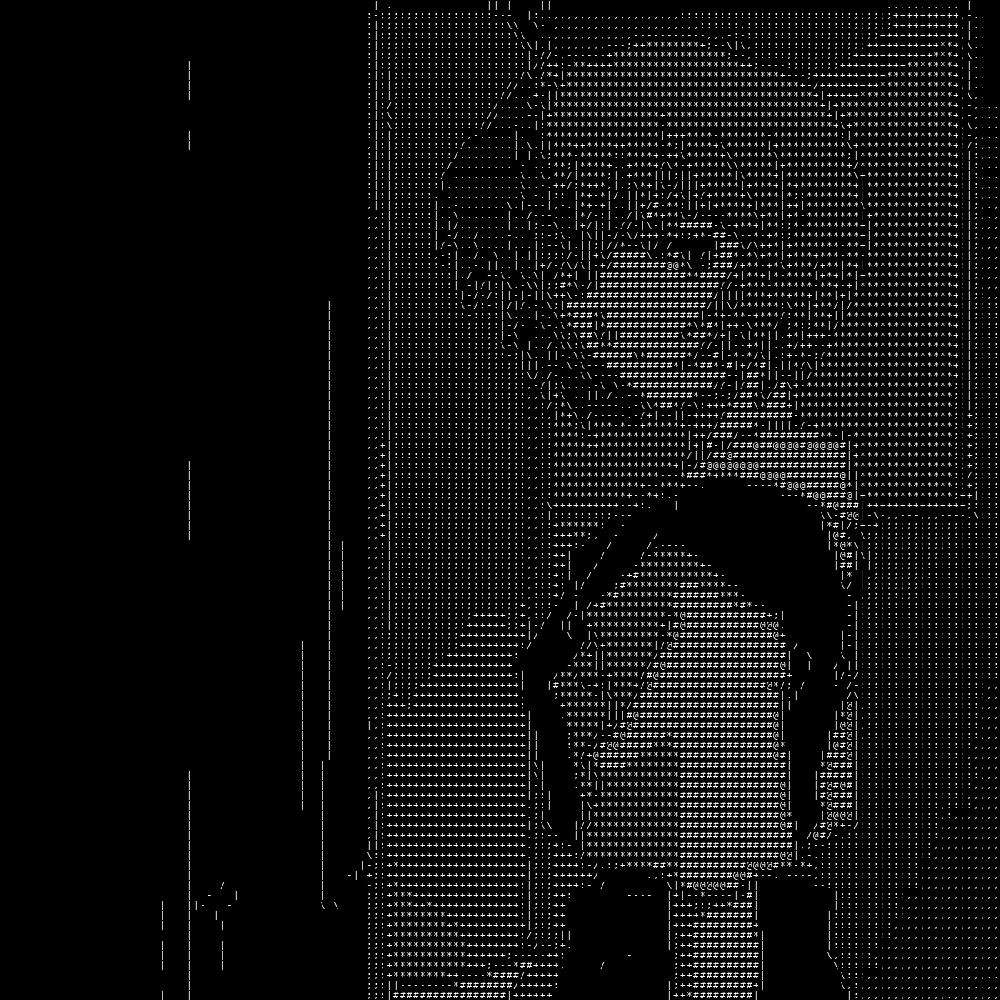

从研究方向出发，沿分支探索问题
删除这个问题及其归并的追问？它会从关系图和提问顺序中移除，原始聊天记录保留。
默认使用明确的免费聊天模型，不使用随机路由。更换模型前请确认价格。
密钥会加密保存到当前 ChatGPT 账号，登录同一账号的设备可直接使用。不会写入聊天或数据备份；清除密钥会同步到其他设备。
只把勾选的问题加入地图。连续追问会补充到原问题。
勾选要独立显示的追问，可修改标题。原始对话不变，未勾选的仍留在原问题下。
只合并勾选项；标题与分类保留为主问题，各自原话、摘要和出处会保留，之后仍可拆分。
已登录 ChatGPT 账号
对话和问题会自动同步，无需每次手动操作。